6 Psychological Network Models
6.1 Introduction
Psychology widely accepts common cause theories. High scores on cognitive tests are often attributed to high intelligence. Charisma is often linked to multiple leadership qualities. A high \(p\)-factor score (psychopathology factor) is often associated with several mental health issues. The common cause explanation is often favored due to its simplicity and the availability of statistical methodology, such as factor analysis. However, in most cases, the common cause is merely a hypothetical construct. Many people accept common cause theories because they do not see any alternative. However, complex systems theory offers a powerful alternative, including a statistical approach.
The main thesis of this chapter is that the functioning (and dysfunctioning) of the human mind can be best understood as a complex interplay of various psychological elements such as cognitive functions, mental states, symptoms, and behaviors. This interplay can be modeled using networks, psychological networks.
Psychological networks are perhaps the most thriving area of complex systems research in psychology today. This chapter is about this new line of research. The paper on the mutualism model of general intelligence (Van Der Maas et al. 2006) can be seen as the root of this approach, but it really took off, as shown in Figure 6.1, when it was applied to clinical psychology (Borsboom 2017, 2008; Cramer et al. 2010), especially when the theoretical work was backed up with psychometric tools (Epskamp, Borsboom, and Fried 2018; Epskamp et al. 2012; Maarten Marsman and Rhemtulla 2022).
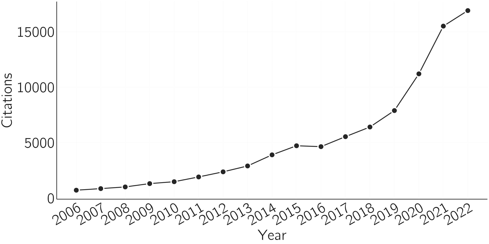
In this chapter I will present and discuss these theoretical and psychometric lines of research, accompanied by practical examples. However, I will begin with an introduction to network theory.
6.2 Network theory
It is hard to imagine a discipline in which networks are not a central theme. Networks are the key to understanding systems ranging from particle physics to social networks, from ecosystems to the Internet, and from railways to the brain. The mathematics of network theory is not so easy to grasp, but fortunately the basic concepts and ideas are. I will give a brief introduction.
6.2.1 Network concepts
A network, a special type of graph, consists of nodes (often called vertices) and links (or connections or edges). I will explain some basic concepts here and illustrate each of them with R-code below.
The size of a network is equal to the number of nodes. Nodes can be anything, particles, neurons, words, people, train stations, etc. Nodes are connected by links. Links can be directed or undirected. For example, causal links are directed. Occasionally you see links from the node to itself. In causal networks this may represents self-excitation or if the weight is negative, self-inhibition. In some cases, links are simply present or absent, in other cases links are weighted, as in most neural networks. The list of all non-zero links is called the adjacency or edge list. The matrix of all weights, indicating the strengths of the connections between nodes, is called the adjacency or edge matrix. For an undirected network, the adjacency matrix is symmetric. For a network without self-loops, the diagonal of the adjacency matrix is zero.
A connected network is a network in which every node is connected to every other node, possibly through intermediate nodes. In a fully connected network, or complete graph, every node is directly connected to every other node. Such a network has a density of one (i.e., the proportion of edges that is present).
Nodes can be in the center of a network or in the periphery. This should not be taken literally as psychological networks have no spatial dimension. Centrality measures quantify the relative influence, control, or connectivity of a node compared to other nodes in the network. There are many kinds of centrality measures, such as closeness centrality and degree centrality. The degree of a node is equivalent to the number of links it has. The average degree of a network is the average of this number over all nodes. The degree distribution can take several forms. A random graph, where nodes are connected randomly, has a binomial degree distribution. Most real-world networks have a skewed degree distribution. Sometimes nodes are organized into clusters or communities, where the density is higher than between clusters. The average shortest path length (ASPL) is the average number of edges that must be traversed to get from one node to another using the shortest paths (i.e., the fewest intermediate nodes).
There are many methods available in R for creating and visualizing networks and for computing properties of networks. The igraph and qgraph libraries are very useful. It is a good idea to do a bit of experimentation with this R code below by varying the parameter values.
library(igraph);library(qgraph)
g1 <- graph( edges=c(1,2, 2,3, 3,1), n=3, directed=F )
plot(g1) # an undirected network with 3 nodes
g2 <- graph( edges=c(1,2, 2,3, 3,1, 1,3, 3,3), n=3, directed=T )
plot(g2) # an directed network with self-excitation on node 3
get.adjacency(g2) # weight matrix
fcn <- make_full_graph(10) # a fully connected network
plot(fcn, vertex.size=10, vertex.label=NA)
layout(1)
set.seed(1)
adj <- matrix(rnorm(100,0,.2),10,10) # a weighted adjacency matrix
adj <- adj*sample(0:1,100,replace=T,prob=c(.8,.2)) # set 80% to 0
qgraph(adj) # plot in qgraph
edge_density(fcn) # indeed 1
edge_density(graph_from_adjacency_matrix(adj,weighted=TRUE)) # indeed .2
centralityPlot(qgraph(adj)) # note centrality() gives more indices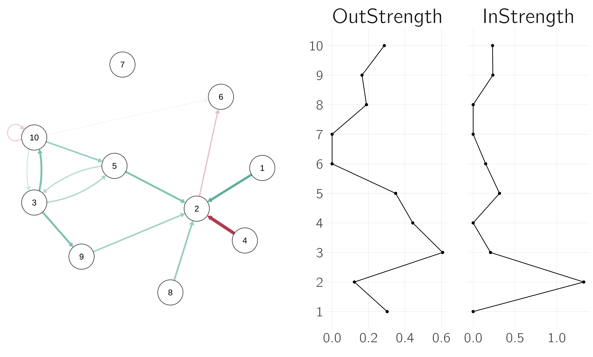
6.2.2 Network types
Simple networks do not have cycles. An example of an undirected acyclic graph is one with nodes on a line (but not a circle). Connected undirected acyclic graph are trees; if they are partially un-connected, they are forests. Directed acyclic graphs, such as family trees and citation networks, are called DAGs. Most current neural networks are feed-forward networks without cycles, but so-called recurrent networks have cycles.
Igraph has an amazing number of functions for creating specific networks. Some examples are shown in Figure 6.3.

The last case in the figure, preferential attachment, is of particular interest because it is created dynamically. It starts with a node and then new nodes are added that prefer links to nodes that already have many links. In the NetLogo model ‘Preferential Attachment simple’ you can see this growth process. This type of network is “scale-free”, meaning that the degree distribution looks the same no matter what scale you look at it (like fractals, see Section 2.7). Scale-free networks are believed to exist in various real-world scenarios, ranging from website connections to scientific collaborations. For a critical analysis, I refer to Broido and Clauset (2019).
Scale-free networks have a degree distribution that follows a power law, with some nodes having many links, but most having only a few. Scale-free networks are useful for studying the robustness and vulnerability of networks to targeted attacks on highly connected nodes. Removing hubs with high degree potentially split the network into disconnected components and impede the network’s functionality. Because most nodes in the network have a small degree (few connections), randomly removing nodes tends not to disrupt the network’s overall structure. Preferential attachment networks are often called complex because it exhibits non-trivial structural patterns.
Another type of complex network is the small-world network. This type of network consists of clusters, but there are also links between the clusters. As a result, the distance between any two nodes in the network is always relatively short. A famous example is the six-handshake rule (also known as the six degrees of separation), which states that all people are six or fewer handshakes away from each other. For this reason, small-world networks are useful for studying the spread of information or disease through social networks.
The scale-free and small-world networks are predominantly associated with the complex system approach. However, I believe that the Hierarchical or Nested Stochastic Block Model (HSBM) is equally relevant (Clauset, Moore, and Newman 2008). In the stochastic block model, nodes are organized into clusters with connections typically being stronger or more frequent within these clusters than between them. The HSBM extends this concept further; clusters are nested within larger clusters, which in turn are part of even larger clusters in a continuous sequence (see Figure 6.4), resembling fractals.
This nesting is crucial for understanding complex systems and is a central theme in Simon’s influential architecture of complexity (Simon 1962). He introduced the concept of near decomposability to describe the interaction within these nested hierarchies. Typically, interactions within each subsystem are stronger and more frequent than those between subsystems. Although the HSBM simplifies reality, where levels can intermingle and low-level interference might occasionally escalate to higher levels, it often serves as a useful framework for conceptualizing complex networks, including in the field of psychology.

6.2.3 Network dynamics
A prominent phase transition in network theory is the emergence of a giant component. This happens when we start with a completely unconnected network of \(n\) nodes and randomly add links. We simply take a random node and connect it to another node to which it has no connection. This leads to many small unconnected clusters at first, but then a giant component appears (a second order phase transition). This happens when about \(n/2\) links have been added. You can verify this in the NetLogo model ‘Giant Component’. The implication is that randomly connected networks with a sufficient number of links are almost always connected networks.
This is just one example of network dynamics (Dorogovtsev and Mendes 2002). We can distinguish between dynamics on node values (e.g., Lotka-Volterra models), on link values (connection strength in neural networks), and cases where the structure of the network is dynamic, as in the Giant Component example. These types of dynamics also coexist and interact. In neural networks, both node and link values are updated (on fast and slow time scales). We will see more examples in the next chapter.
A relatively new topic in complex networks concerns higher order interactions. In most networks we only consider pairwise interactions, but third order and even higher order interactions may play a role (Battiston et al. 2021). Other work considers hierarchical complex networks (Boccaletti et al. 2014). For more information on network concept and types, I first refer to Wikipedia. Another great (open) source is the book by Barabási and Pósfai (2016). A more concise overview is provided by Boccaletti et al. (2014).
6.3 Psychological network models
The idea of emergentism, discussed in Chapter 1, is that there are multiple, hierarchically ordered levels of description, and that one need not always refer to lower levels to explain phenomena. Psychology seems to have a problem with this: We are missing levels. The lowest relevant level seems to be the neural level. Neural activity can be aggregated into the activity of neural groups or even brain areas. At the highest level we have observed behavior, for example motor and speech actions. The relations between these levels is often obscure.
We have a similar gap between genes and psychological phenotypes (e.g., intelligence, personality, disorders). One attempt to bridge this gap is the watershed model (Penke, Denissen, and Miller 2007), in which many small genetic factors culminate, in a watershed-like process, into the phenotype.
The problem is that the biological and psychological levels are simply too far apart. What current deep learning neural networks can do is very impressive, but for reasoning, planning, and problem solving, some kind of symbolic processing seems to be necessary. A simple example is the computation of the outcome of 16 x 12, which requires active and systematic manipulation of mathematical symbols in working memory. This is an active area of research, but I’m not aware of any generally accepted solution (Garcez, Lamb, and Gabbay 2008). The current success of large language models in AI shows that a purely associative neural network approach to language is impressively powerful. Semantic networks also provide a fruitful intermediate level of analysis. I will not discuss semantic networks in this chapter, but they are one of the most successful applications of network science in psychology (Kumar 2021; Steyvers and Tenenbaum 2005).
A final example of our struggle with a gap between levels is the use of latent variables in differential psychology. Latent variables are used in statistical modeling to represent unobservable or underlying factors that cannot be directly measured or observed. Differential psychology is concerned with individual differences, in contrast to experimental psychology that is concerned with mechanisms. This division comes from a renowned paper by Cronbach (1957) on the two disciplines of scientific psychology.
Examples of extensively studied individual differences are personality and intelligence. Differential psychologists model relationships between observed behaviors, such as responses to test items and questionnaires, using latent variables. The statistical tools for analyzing latent variables come from modern test theory and structural equation modeling (SEM). These technically advanced tools are developed in a field called psychometrics.
However, despite this technical sophistication, it is not always clear what latent variables are in psychometric models. Some researchers tend to think of them as purely statistical constructs that help summarize relationships between variables and make predictions. But more often, either implicitly or explicitly, latent variables are interpreted as real constructs, as common causes of observed measures (van Bork et al. 2017).
The latent variable or factor approach has long been dominant in differential psychology. When studying individual differences in a trait, psychologists generally follow the same approach. They construct tests, collect data, perform factor analysis, and propose one or more latent traits to explain observed individual differences. The justification for this approach, particularly in intelligence research, rests primarily on its predictive power.
The psychological network approach was developed in response to the factor approach. The main reason is that underlying common causes are unsatisfactory if they cannot be identified independently of the observed relationships they are supposed to explain (Van Der Maas et al. 2006). One consequence is that such an explanation does not provide guidance for possible interventions.
6.3.1 Mutualism model: the case of general intelligence
6.3.1.1 The \(g\) factor
The factor analytic tradition in psychology began with the study of general intelligence, and so does the psychological network approach. The factor or \(g\) model of general intelligence was proposed by Spearman (1904) as an explanation of the positive manifold, i.e., the much replicated effect that subtests of intelligence test batteries are positively correlated. In the original simplest model, the observed test scores are statistically explained by a common factor, meaning that the correlations between test scores disappear when subjects have the same score on the common factor. In the Cattell-Horn-Carroll (CHC) model often referred to as the standard model, test scores load on subfactors such as visual processing (Gv) and fluid reasoning (Gf), which in turn are positively correlated. These latent correlations are explained by the general, higher order, factor \(g\).
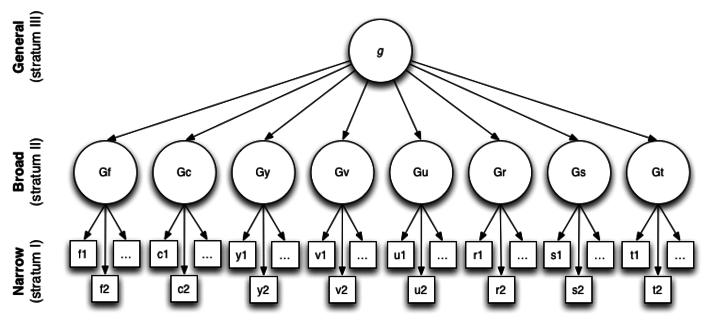
This model has been criticized extensively, including for its alleged implications for group differences in observed IQ and intervention strategies (Fraser 2008). In my view, some of the criticism is unwarranted. For example, the positive manifold is a very robust and widely replicated empirical phenomenon. The specific tests included are not of great importance. That is, any reliable measure of creativity, emotional or social intelligence correlates positively with other IQ subtests. Nor is there much wrong with factor analysis as a statistical technique. To me, the most questionable aspect of g-theory is that it is not really a theory at all. The “elephant in the room” question is simply: What is \(g\)? What could this single factor be that explains everything? A century of research has not produced a generally accepted answer to this question. And this is a problem for many factor explanations in psychology (e.g., the big five of personality, the \(p\)-factor of psychopathology).
It is important to note that factor explanations are not always problematic. I like to use the example of heart disease, say a loose heart valve. This leads to symptoms such as shortness of breath, swelling of the ankles, dizziness, rapid weight gain, and chest discomfort. The relationship between these symptoms is explained by the underlying factor of heart disease. Treating a single symptom may provide some relief for that symptom, but not more. Only intervening on the cause will bring about real change. This is an example of a reflective interpretation of the factor model. When the factor is merely an index and not a common cause, we speak of a formative factor. Figure 6.6 explains the reflective and formative interpretations of the factor model.
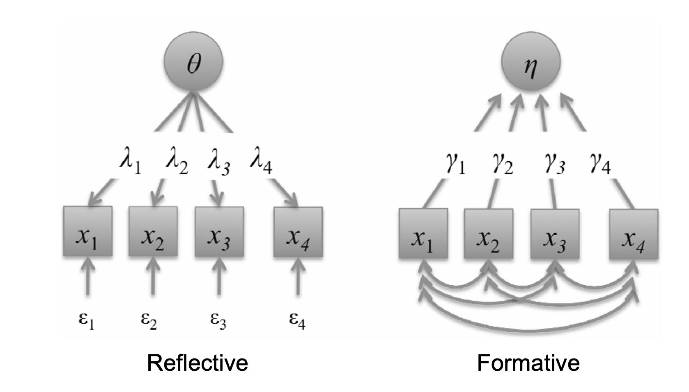
Statistically, these factor models are equivalent. Thus, the fact that factor models fit intelligence data well does not tell us anything about the status of \(g\). Is it a common cause or just an index?
6.3.1.2 Mutualism model
Van Der Maas et al. (2006) proposed an alternative model that is consistent with the formative interpretation of the factor model. The idea is that our cognitive system consists of many cognitive functions that develop over time in an autocatalytic process based on experience and training, but also due to weak positive reciprocal interactions between developing cognitive functions. Examples of such mutualistic interactions are those between short-term memory and cognitive strategies, language and cognition (syntactic and semantic bootstrapping), cognition and metacognition, action and perception, and performance and motivation (Van Der Maas et al. 2017). For example, babies learn to grasp objects by repeatedly reaching out, coordinating their hand and finger movements, and adjusting their grip. Through these actions, they gather sensory feedback, refining their perception and improving their grasping skills in a reciprocal learning process (Needham and Nelson 2023).
To model this we used the mutualistic Lotka-Volterra model, which is:
\[\frac{dX_{i}}{dt} = a_{i}X_{i}\left( 1 - \frac{X_{i}}{K_{i}} \right) + a_{i}\sum_{\begin{array}{r} j = 1 \\ j \neq i \end{array}}^{W}\frac{M_{ij}X_{i}X_{j}}{K_{i}}\ \ \ for\ i = 1..W\]
\[\begin{array}{r} K_{i} = c_{i}G_{i} + \left( 1 - c_{i} \right)E_{i} \end{array} \tag{6.1}\]
Where \(X_{i} \ldots X_{w}\) denote the cognitive processes, \(a\) the growth rates, \(K\) the limited resources for each \(X\) (a weighted sum of a genetic (\(G\)) and an environmental (\(E\)) part), and \(M\) the interaction matrix. The second equation, assuming simple linear effects of genetics and environment, is sufficient to explain some typical phenomena in twin research, such as the increase in heritability with age (see the 2006 paper).

When \(M\) contains mostly negative values, the model is known as a competitive Lotka-Volterra model. In this case, limit cycles and other nonlinear phenomena may occur (Hirsch 1985). For the mutualistic variant, with positive \(M\), we see either convergence to a positive state or exponential growth. This exponential growth is an unfortunate aspect of the Lotka-Volterra mutualism model. Robert May famously described this effect as an orgy of mutual benefaction (May, Oxford, and McLean 2007), which is not what we see in nature, and all sorts of solutions have been proposed (Bascompte and Jordano 2013).
The mutualism model in Grind is specified as follows:
mutualism <- function(t, state, parms){
with(as.list(c(state,parms)),{
X <- state[1:nr_var]
dX <- a*X*(1-X/k) + a*(X * M %*% X)/k # using matrix multiplication
return(list(dX))
})
}A simulation of the positive manifold requires us to run this model for multiple people and collect the \(X\)-values after some time points (tmax=60) for each person. We can then compute the correlations and check if they are positive. For each person, we resample \(a\), \(K\) and the initial values of \(X\), but \(M\) is the same across persons. Note that the M-values should not be set to high because we then end up in May’s orgy of mutual benefaction. In the second part of this chapter, we will generate more data with this model and fit network and factor models.
layout(matrix(1:2,1,2))
nr_var <- 12 # number of tests, abilities (W)
nr_of_pp <- 500
data <- matrix(0,nr_of_pp,nr_var) # to collect the data in the simulation
M <- matrix(.05,nr_var,nr_var)
M[diag(nr_var)==1] <- 0 # set diagonal of M to 0
for(i in 1:nr_of_pp)
{
# sample a,K, starting values X from normal distributions for each person separately
# note M is constant over persons.
a <- rnorm(nr_var,.2,.05)
k <- rnorm(nr_var,10,2)
x0 <- rnorm(nr_var,2,0.1) # initial state of X
s <- x0;p <- c() # required for grind
data[i,] <- run(odes=mutualism ,tmax=60, timeplot = (i==1),legend=F) # collect data (end points)
#plot person 1 only
}
hist(cor(data)[cor(data)<1],main='positive manifold',
xlab='between test correlations',col='lightgreen') # positive manifold
6.3.1.3 Abnormal development
In Van Der Maas et al. (2017), this model is applied in several ways, for example, by incorporating Cattell’s idea of investment of fluid skills in crystalized abilities. In a recent paper, de Ron et al. (2023b) extends the mutualism model with resource competition to explain different patterns of abnormal development. One pattern of abnormal development is hyperspecialization, which is associated with rare variants of autism. In the process of modeling, we came to an interesting insight. Assuming that there is competition for scarce resources (time, money, educational support), hyperspecialization is the default outcome and it is ‘normal’ development that needs to be explained. The reason is the following insight from mathematical biology.
In basic resource competition models in population biology (Tilman, Kilham, and Kilham 1982), the growth of a species (\(1...W\)) is determined by its current size \(X_{i}\) and the sum over resources \(R_{j}\ (1...V)\). The parameters \(\mu_{ij}\) determines how much species \(i\) benefits from the resource \(j\). If no resources are available, \(X_{i}\) dies out with death rate \(d_{i}\).
The growth of the resource \(r_{j}\) consists of two parts. The first part models the growth by a concave function, which is determined by \(r\) (i.e., the steepness of the concave function) up to \(r_{\max}\). The second part is the depletion by consumption of resources by \(X_{i}\) at rates \(b_{ij}\). Two differential equations specify these dynamics (see the Appendix of Ron et al. (2023a)) for the Grind code to study this model numerically]:
\[\frac{dX_{i}\ }{dt} = X_{i}(\sum_{j = 1}^{V}{\mu_{ij}R_{j} - d_{i}})\]
\[\begin{array}{r} \frac{dR_{j}\ }{dt} = {r\left( r_{\max} - R_{j} \right) - R}_{j}\sum_{i = 1}^{W}{b_{ij}X_{i}} \end{array} \tag{6.2}\]
What has been shown for this and related models is that you will not get more species surviving than there are resources. Another famous quote from Robert May is “There is no comfortable theorem assuring that increased diversity and complexity beget enhanced community stability; rather, as a mathematical generality, the opposite is true. The task, then, is to elucidate the devious strategies which make for stability in enduring natural systems. There will be no one simple answer to these questions.” Thus, given a limited number of resources (time, money, educational support), we should expect early specialization in only a few skills.
Biologists have proposed a number of mechanisms to deal with this problem (Meena et al. 2023). In de Ron et al. (2023b) we added three mechanisms: a) density dependent growth (see Section 5.1.2) of the abilities \(X\) with a logistic term, b) mutualism between abilities as in the mutualism model, and c) growth-dependent depletion of resources. The idea of the latter is that especially the growth of abilities costs a lot of resources, the maintenance much less. Learning arithmetic or chess requires a lot of effort, but once a certain level of mastery is reached, it remains roughly at that level without further training (unfortunately, this is not the case with physical condition).
In this paper, we show that the combination of these mechanisms allows a balanced growth of several correlated abilities. Specially chosen parameter settings led to different patterns of abnormal development (such as hyperspecialization and delayed development). The final model is:
\[\begin{array}{r} \frac{dX_{i}}{dt} = X_{i}\left( \sum_{j = 1}^{V}{\mu_{ij}R_{j}\overset{\text{Logistic growth}}{\overbrace{\left( 1 - \frac{X_{i}}{K_{i}} \right)}}} - d_{i} \right) + \overset{\text{Mutualism}}{\overbrace{\sum_{j = 1}^{W}{M_{ij}X_{i}X_{j}\text{/}}K_{i}}} \end{array}\]
\[ \begin{array}{r} \frac{dR_{j}}{dt} = r\left( r_{\max} - R_{j} \right) - R_{j}\sum_{i = 1}^{W}{b_{ij}\frac{dX_{i}}{dt}}\ \left\{ \begin{array}{r} growth - dependent\ \\ resource\ depletion \end{array} \right\} \\ \end{array} \tag{6.3}\]
6.3.1.4 The wiring of intelligence
A limitation of mutualism models is that only the activation of nodes is updated. The weight and structure of the network are fixed. While this may be sufficient to explain some developmental phenomena, it is ultimately unsatisfactory. The links themselves should be adaptable, as in the learning of neural networks. An example of learning in the form of updating weights is presented in a later section on the Ising Attitude model.
In Savi et al. (2019) the case where both nodes and links are updated was considered. The idea is that cognitive growth is a process in which new nodes and links are added during development. For example, new facts (1+1=2) and procedures (addition) are developed in the process of learning arithmetic. Links between these nodes may prevent forgetting. In the paper we use the Fortuin-Kasteleyn model, a generalization of the Ising model, in which both nodes and links are random. An important property of the model is that whenever two abilities are connected, they are necessarily in the same state, i.e., they are either both present or both absent. It provides a parsimonious explanation of the positive manifold and hierarchical factor structure of intelligence. The dynamical variant suggests an explanation for the Matthew effect, i.e., the increase in individual differences in ability over the course of development.
However, it is difficult to create a growing network with Fortuin-Kasteleyn properties. A simple example of this problem is the random network. In random networks, there is a uniform probability that two nodes are connected. But if we add new nodes to such a network and connect them to existing nodes with the same probability, the existing nodes will have more connections on average. Thus, adding new nodes destroys the randomness of the network, that is the probability that two nodes are connected is not uniform over nodes anymore. Such a network is a non-equilibrium network (Dorogovtsev and Mendes 2002). Rewiring algorithms to achieve equilibrium exist, but they are not trivial.
6.3.2 Symptom networks
In the network perspective on psychopathology, a mental disorder can be viewed as a system of interacting symptoms. Network theory conceptualizes mental disorders as complex networks of symptoms that interact through feedback loops to create a self-sustaining syndromic constellation. Mental disorders can be understood as alternative stable states of highly interconnected networks of symptoms (Borsboom 2017).
As with the mutualism model, this is an alternative to the common cause view. Depression could be caused by some malfunction in the brain, a dysregulation of hormones, or even a genetic defect. But as with general intelligence, no such common cause has yet been found. Drugs work to some extent, but so do most interventions, even placebos and waiting lists (Posternak and Miller 2001). We explicitly offered the network approach as an alternative to the \(p\)-factor account of psychopathology (van Bork et al. 2017).1 It is called the \(p\)-factor because it is thought to be conceptually parallel to the \(g\)-factor of general intelligence (Caspi et al. 2014). And again, no one seems to have any idea what \(p\) might be.
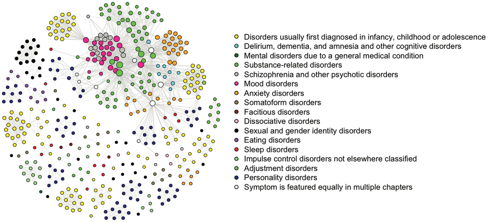
This lack of theoretical progress encouraged the development of network theory (Cramer et al. 2010; Cramer et al. 2016). As mentioned in the introduction of this chapter, this line of research has become very popular. Most of this work consists of data analytic studies. In the simplest case, a questionnaire asking about the severity of symptoms is administered to a group of people, sometimes patients, sometimes a mixture of people who do and do not suffer from a disorder. A variety of psychometric approaches, discussed later in this chapter, are used to fit networks to the data. In this way, one learns to understand the structure of psychopathological networks. For example, comorbidity is modeled by bridging symptoms between network clusters (Cramer et al. 2010; Jones, Ma, and McNally 2021). In the case of major depression and generalized anxiety disorder, sleep problems seem to be a typical bridge symptom (Blanken et al. 2018).
The most popular application is to detect which symptoms are central to a disorder (Eiko I. Fried et al. 2016). However, centrality analysis based on cross-sectional data has its limitations (Bringmann et al. 2019; Spiller et al. 2020). This is one reason to focus on individual networks using timeseries data, often obtained in experience sampling methods (ESMs). Again, these techniques are still under development and not without problems (Dablander and Hinne 2019; Haslbeck and Ryan 2022). For a recent review of the network approach to psychopathology, (see Robinaugh et al. 2020).
In terms of building actual models, not as much work has been done. In Cramer et al. (2016), we proposed an Ising-type model, with node values of 0 and 1, representing symptoms being on or off. Nodes were turned on and off based on a probability computed with a logistic function \(P = 1/(1 + e^{(b_{i} - A_{i}^{t})}\). \(A_{i}^{t}\) equals the sum of the weighted input from other connected nodes and \(b_{i}\) is a node-specific threshold that normally keeps nodes in the zero state. A strong point of this model is that the connections and thresholds were estimated from data. This model is the origin of the connectivity hypothesis. The idea is that high connectivity within a network of symptoms could lead to a more persistent and severe disorder for a discussion, (see Elovainio et al. 2021).
Since thresholds are generally negative (the zero state of nodes is the default state), sufficient connectivity is required to have a depression as an alternative stable state. A limitation of this model is that although it is similar to the Ising model, the exact dynamics are not well understood.
A similar approach was used by Lunansky et al. (2022) in order to define resilience and evaluate intervention targets. The model can be found in the NetLogo User Community Models under the name of ‘Vulnerability to Depression’ by Claudia van Borkulo (see Figure 6.10). Another relevant network modeling approach, based on causal loop diagrams, is proposed in Wittenborn et al. (2016). The panic disorder model discussed in the previous chapter is also an example.
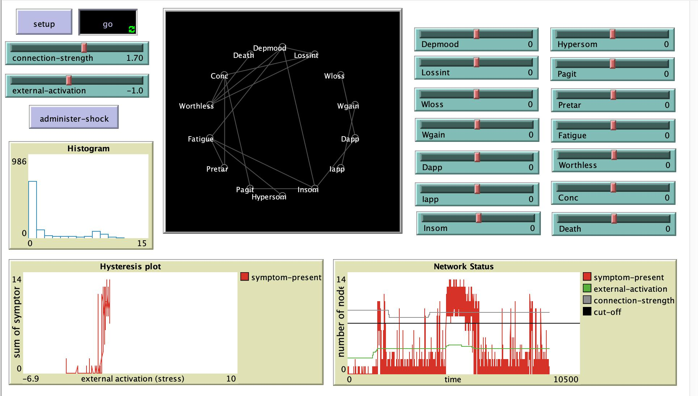
The connection to resilience is interesting. In dynamic terms, resilience is not associated with the healthy or unhealthy state, but with the stability of these states (Figure 6.11). In Section 3.2.3 the less deep minimum is called the metastable state. These states have less resilience than the globally stable state.
This suggests a distinction between perturbations and interventions. With interventions, we change the equilibrium landscape to allow a sustainable change to a healthy state. Perturbations (a brief intervention or a positive or negative event) can have a permanent or temporary effect, depending on which state is more resilient. In the situation shown in the top panel of Figure 6.11, any intervention, whether it is a real treatment or an alternative (or even being on the waiting list), will work. In the situation on the bottom left, no intervention would have a lasting effect. This definition of resilience may help to understand the inconsistent results of studies of intervention effects. Monitoring the resilience of the unhealthy state (with catastrophe flags such as anomalous variance) may also be important for timing interventions (Hayes and Andrews 2020). Failed interventions, such as an attempt to quit smoking, are likely to reinforce the unhealthy state (Vangeli et al. 2011).
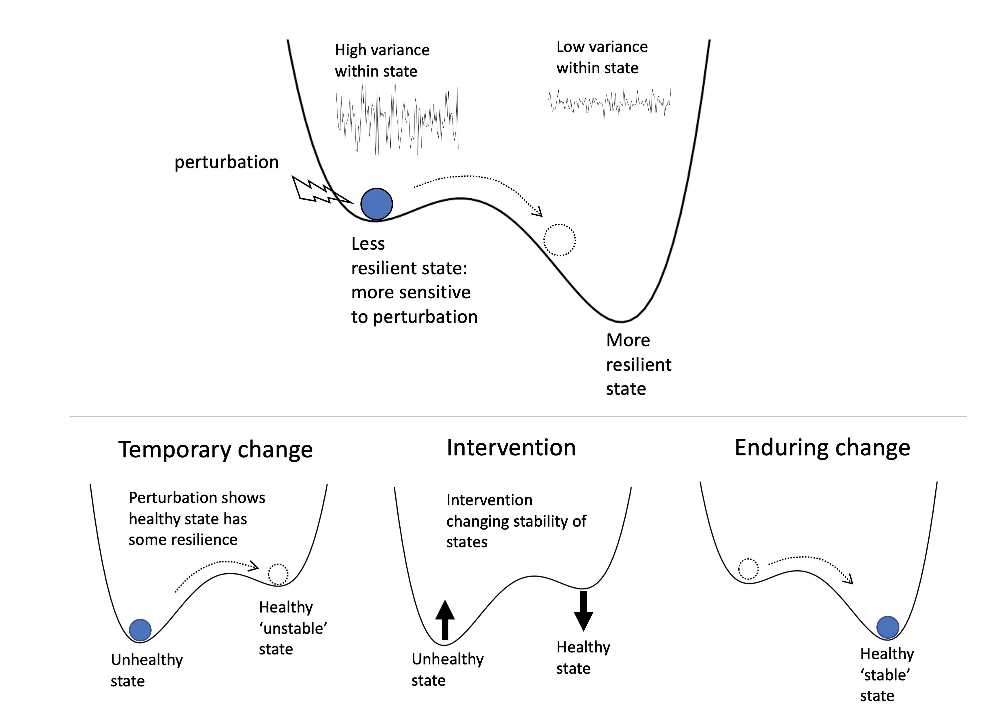
6.3.3 Ising attitude model
The network approach has been applied to many other domains outside of intelligence research and the study of psychopathology. Examples include emotion (Lange and Zickfeld 2021; Treur 2019), personality (Costantini et al. 2015; Cramer et al. 2012), interest (Sachisthal et al. 2019), deviations of rational choice (Kruis et al. 2020),and organizational behavior (Lowery, Clark, and Carter 2021). One area where it has been developed into a new theory is attitude research.
People have many attitudes, about food, politics, other people, horror movies, the police, etc. They help us make decisions and guide our behavior. Attitudes can be very stable and multifaceted, but they can also be inconsistent and inconsequential. Social psychology has studied attitudes for a long time, and many insights and theories have been developed.
Attitudes are complex constructs and typical phenomena, such as cognitive dissonance, imbalance, ambivalence, and political polarization, can be well described by a network model. The formalization of attitude theories has been dominated by the connectionist account (Monroe and Read 2008; Van Overwalle and Siebler 2005). In connectionist models, developed in the Parallel Distributed Processing (PDP) approach, attitude units (e.g., beliefs) form a connected network whose activations (between -1 and 1) are updated based on the weighted sum of internal inputs from other units and an external input. These weights or connections are updated according to either the delta rule (a supervised learning rule based on the difference between the produced and expected output of the network) or the Hebb rule (a simpler unsupervised rule). With this setup, these models can explain a number of phenomena in attitude research. Another network account has been put forward in sociology (DellaPosta 2020).
In this section, I will discuss our network approach to attitudes using the Ising model, which was developed in a series of recent papers. The advantages of this model over the connectionist PDP models are that it is derived from basic assumptions, is better understood mathematically, is easy to simulate, provides a psychological interpretation of the temperature parameter, and can be fitted to data (Jonas Dalege et al. 2017).
It was developed as an alternative to the tripartite factor model of attitudes, in which the attitude, a latent factor, consists of lower-order cognitive, affective, and behavioral factors, that each explain observed responses, similar to the CHC model of general intelligence. The causal attitude model (Jonas Dalege et al. 2016), maintains this distinction in cognitive, affective, and behavioral components, but now conceptualizes them as clusters within a network. In Jonas Dalege et al. (2018), this network model is formalized in the form of an Ising model with attention as the equivalent of (the inverse of) temperature. That is high attention ‘freezes’ the network and leads to consistent and stable positive or negative states of the attitude (the ‘mere thought effect’, see below).
6.3.3.1 Model setup
The basic assumptions of the Ising Attitude Model are that nodes are binary (e.g., one eats red meat or not), that nodes influence each other causally, and that they have specific thresholds (as in the model for depression). An external field (a campaign to eat less meat) could also affect the nodes. The orientation of nodes to other nodes and to the external field depends on one’s attention, \(A\), to the attitude object.
Given these simplifying assumptions, which can be relaxed in various ways, we arrive at the random field Ising model Fytas et al. (2018). This model is not too different from the Ising model described in Chapter 4, except that the first term now has two components, a general external effect (\(\tau\)) and an effect of node-specific (\(t_{i}\)) thresholds (‘I just like the taste of chicken a lot’). The random field Ising attitude model can then be defined as:
\[\begin{array}{r} H\left( \mathbf{x} \right) = - \sum_{i}^{n}{(\tau + {t_{i})x}_{i}} - \sum_{< ij >}^{}{{W_{ij}x}_{i}x_{j}} \end{array} \tag{6.4}\]
\[\begin{array}{r} P\left( \mathbf{X} = \mathbf{x} \right) = \frac{\exp\left( - AH\left( \mathbf{x} \right) \right)}{Z} \end{array} \tag{6.5}\]
Another difference from the original Ising model introduced in Chapter 4 is that the interactions are now weighted and can even be negative. The main problem is the same. To compute the probability of a state, one has to compute \(Z\), which is the \(\sum_{< \mathbf{x} >}^{}{exp( - AH\left( \mathbf{x} \right))}\), i.e., a sum over all possible states (\(2^{n}\)). For large values of \(n\) this is not feasible. One solution is to take a random initial state and use Glauber dynamics to update the states until an equilibrium state is reached. The Glauber algorithm does not require \(Z\). There are faster but less intuitive algorithms, the most popular being the Metropolis-Hastings algorithm, which is a slight modification of the Glauber dynamics presented in Chapter 4.
Another approach to understanding the dynamics of Ising-type models is the mean-field approximation. This requires the assumption that the network is fully and uniformly connected with equal thresholds (known as the Curie-Weiss model). In this approximation \(W_{ij}\) and \(x_{j}\) are replaced by their mean values, which greatly simplifies the energy function. It can be shown that the dynamics of the simple fully connected Ising model is very well approximated by the cusp, with the external field as normal and the inverse temperature as the splitting variable.
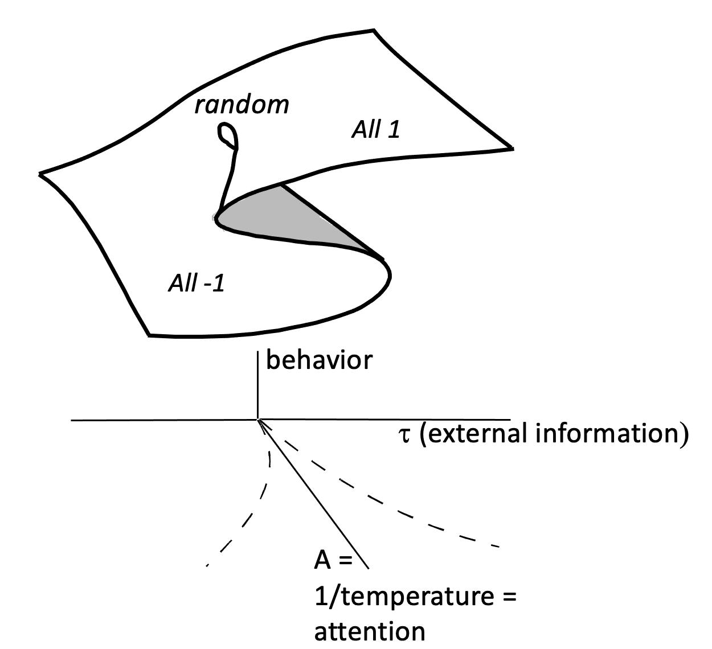
This is an important result because it makes the use of the cusp in attitude research (see Chapter 3) less phenomenological. The cusp is now derived from more basic principles (Figure 6.12). Note that here we use attention as the splitting variable, whereas in Chapter 3 we used involvement. These are closely related concepts, the difference being the time scale. Attention can change in seconds or minutes, whereas involvement can change in weeks or months. I will use attention and involvement interchangeably.
This mean-field approximation is very robust. In Maas, Dalege, and Waldorp (2020) it is shown by simulation that networks with much fewer connections and a distribution of weights, some of which are negative, are still well described by the cusp. This can be easily checked with some R code or in NetLogo. We will make use of the IsingSampler package in R.
6.3.3.2 Simulation
The IsingSampler function runs the Metropolis-Hastings algorithm \(nIter\) times and returns the last state. It can return multiple final states for \(N\) runs. As input it takes a matrix of links (\(W\)), which for the Curie Wiess model should be symmetric with zeroes on the diagonal. The \(thresholds\) for each node should be equal. \(Beta\) is the inverse of the temperature (\(1/T\)).
library("IsingSampler")
n <- 10 # nodes
W <- matrix(.1,n,n); diag(W)=0
tau <- 0
N <- 1000 # replications
thresholds <- rep(tau, n)
layout(t(1:2))
data <- IsingSampler(N, W, nIter=100, thresholds, beta = .1, responses = c(-1, 1))
hist(apply(data,1,sum),main="beta = .1",xlab='sum of x')
data <- IsingSampler(N, W, nIter=100, thresholds, beta = 2, responses = c(-1, 1))
hist(apply(data,1,sum), main="beta = 2",xlab='sum of x')
In Jonas Dalege and van der Maas (2020), we simulated the difference between implicit and explicit measures of attitude. The idea is that the individual thresholds contain information about the attitude that can only be detected when attention is moderately low. When attention is too high, the alignment between the nodes dominates the thresholds. Indeed, in implicit (indirect) measures of attitude, attention is much lower than in explicit measures such as an interview. This can be simulated as follows:
layout(1)
N <- 400
n <- 10
W <- matrix(.1,n,n); diag(W) <- 0
thresholds <- sample(c(-.2,.2),n,replace=T) # a random pattern of thresholds
dat <- numeric(0)
beta.range <- seq(0,3,by=.05)
for(beta in beta.range)
{
data <- IsingSampler(N, W, nIter = 100, thresholds, beta = beta, responses = c(-1, 1))
dat <- c(dat,sum(thresholds*apply(data,2,sum))) # a simple measure of alignment
}
plot(beta.range,dat,xlab='beta',ylab='alignment with thresholds',bty='n')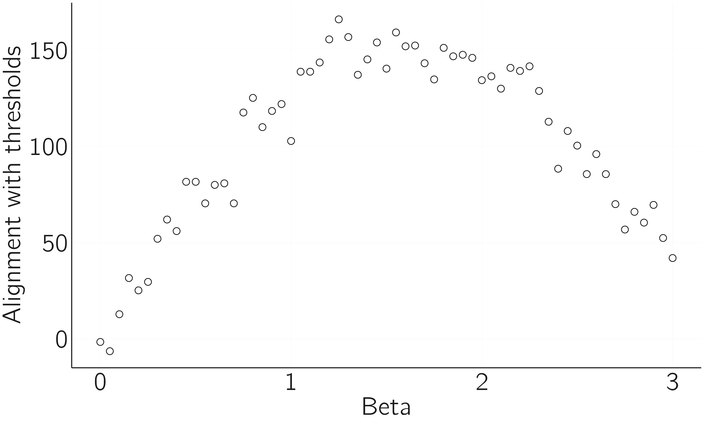
We see that for medium attention, the agreement with the thresholds is highest. When attention is zero or very low, nodes behave randomly and do not correlate with the thresholds. When attention is very high, the effects of node-specific thresholds are masked by the collective effects of other nodes. The principal problem of implicit measurement is that for low to medium attention, the network is quite noisy. This is why this paper is called “Accurate by being noisy”.
6.3.3.3 Learning
These connectionist attitude models are capable of “learning”, i.e., adjusting the weights. This can also be done in the Ising attitude model by using Hebbian learning. Hebbian learning, ‘what fires together, wires together’, can be formulated as:
\[\begin{array}{r}
\mathrm{\Delta}W_{i,j} = \epsilon\left( 1 - \left| W_{i,j} \right| \right)x_{i}x_{j} - \lambda W_{i,j}
\end{array} \tag{6.6}\]
Weights will grow to 1 if the nodes they connect are consistently either both 1 or both -1. If they consistently differ in value, the weight grows to -1. If the nodes behave inconsistently, the weight shrinks to 0.
In R, this can be implemented as follows:
library(qgraph)
hamiltonian=function(x,n,t,w) -sum(t*x)-sum(w*x%*%t(x)/2)
glauber_step = function(x,n,t,w,beta)
{
i = sample(1:n,size=1) # take a random node
x_new=x;x_new[i]=x_new[i]*-1 # construct new state with flipped node
p=1/(1+exp(beta*(hamiltonian(x_new,n,t,w)-hamiltonian(x,n,t,w)))) # update probability
if(runif(1)<p) x=x_new # update state
return(x)
}
layout(t(1:2))
epsilon <- .002;lambda <- .002 # low values = slow time scale
n <- 10
W <- matrix(rnorm(n^2,0,.1),n,n); W <- pmax(W,t(W)) # to make W symmetric
diag(W) <- 0
qgraph(W); title('before learning')
thresholds <- rep(.2, n)
x <- sample(c(-1,1),n,replace=T)
for(i in 1:500)
{
x <- glauber_step(x,n,thresholds,W,beta=2)
W <- W+epsilon*(1-abs(W))*outer(x,x,"*")-lambda*W # Hebbian learning
diag(W) <- 0
}
round(W,2)
qgraph(W);title('after learning')
In this case we want to update the nodes values using the Glauber dynamics (Equation 5.3), which uses the computation of the energy of a particular state. Both functions (glauber_step and hamiltonian) are added to the R-code.
Due to Hebbian learning, the network evolves from an unbalanced network (random connections) to a consistently balanced network. Without learning, we need high attention to make the attitude network behave consistently. In the Learning Ising Attitude Model (LIMA), weights increase during periods of high attention. The advantage is that in later instances less attention is required for consistent network behavior (chapter 8 of J. Dalege 2020). In this way we can develop stable consistent attitudes.
6.3.3.4 The stability of attitudes and entropy measures
So, adding Hebbian learning to the Ising attitude model leads to stable and consistent attitudes. Computing the Gibbs entropy is the best way to quantify this (proposition I.2 in Jonas Dalege et al. 2018). Earlier the Boltzmann entropy was defined in Section 4.1.1 as the log of the number of ways (W) a particular macrostate can be realized. It measures the inconsistency of a particular attitude state (proposition I.1 in Jonas Dalege et al. 2018).2 Gibbs entropy is more general in that it does not assume that each microstate is equally probable. Instead, it deals with a probability distribution over the different microstates X. It is defined as:
\[\begin{array}{r} - \sum_{< \mathbf{x} >}^{}{P\left( \mathbf{x} \right)\ln{P\left( \mathbf{x} \right)}} \end{array} \tag{6.7}\]
Note that we sum over all microstate (\(2^{n})\). For small networks we can compute this measure using the IsingEntrophy() function of the IsingSampler package. There is much more to say about the different entropy measures. For instance, Shannon entropy (a measure in information theory) and Gibbs entropy have the same mathematical definition but are derived from completely different lines of reasoning. An introduction to the discussion on entropy measures can be found at Entropy page of Wikipedia.
6.3.3.5 Tricriticality
A new direction of research concerns Ising type models with trichotomic node values (-1,0,1). In physics this case is known as the tricritical Ising model or the Blume Capel model (Saul, Wortis, and Stauffer 1974). In physics, the states +1 and -1 could represent the spin of a particle pointing up or down, while 0 could represent a non-magnetic or spinless state. In an attitude model, +1 and -1 may represent pro and con beliefs, while 0 represents a neutral belief. The Hamiltonian of the model includes a penalty for the -1 and +1 states:
\[\begin{array}{r} H\left( \mathbf{x} \right) = - \sum_{i}^{n}{\tau x_{i}} - \sum_{< i,j >}^{}{x_{i}x_{j}} + D\sum_{i}^{n}{x_{i}}^{2} \end{array} \tag{6.8}\]
You can compare this to Equation 5.1. The last term penalizes (increases the energy) of the -1 and +1 states relative to the 0 state.
The dynamics of this model are more complicated. It resembles the butterfly catastrophe (Dattagupta 1981), which has a tricritical point. The potential function has three stable fixed points for some sets of parameters (see Section 3.2.5 and the exercise about the butterfly catastrophe). This is relevant to the modeling of attitudes because it opens up the possibility to have involved stable inbetween attitude positions (see Figure 6.16). In the Ising attitude model highly involved persons always radicalize, but this more advanced model allows for involved non-partisan positions.
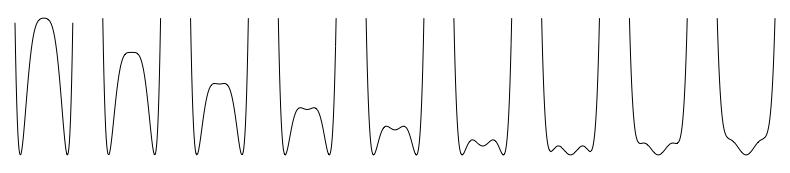
6.4 Psychometric network techniques
So far, we have seen examples of theoretical psychological network models in the fields of cognitive, clinical, and social psychology. However, much of the popularity of this approach is due to the psychometric approach that has been developed to analyze data using networks. In the last 15 years, a family of statistical approaches has been developed for all kinds of data and empirical settings. Our psychosystems group (psychosystems.org) has published a book “Network Psychometrics with R: A Guide for Behavioral and Social Scientists” (Isvoranu et al. 2022). This resource is highly recommended. I will limit myself to a brief overview and some practical examples related to the models presented in the first part of this chapter.
6.4.1 Main techniques
An important aspect of Network Psychometrics is to visualize the network. This is the process of creating visual representations of the network structure. This helps in interpreting the data. The main R packages for visualization are igraph and qgraph. Both packages include many other useful functions.
A more advanced application of network psychometrics is network estimation. This involves using statistical methods to estimate the structure of the network, including which nodes are connected to each other and the strength of those connections. The most used methods for network estimation are Gaussian graphical models (packages bgms, BDgraph, ggm, psychonetrics, qgraph, BGGM, huge), partial correlation networks (qgraph, qgraphicalmodels), and Ising models (IsingFit, IsingSampler, rbinnet). The mgm package can be used to fit mixed graphical models, with a mixture of categorical and continuous valued nodes. The bgms package applies Bayesian estimation and allows testing for missing links. The huge package is used to represent the conditional dependence structure among many variables and is particularly useful when the number of variables is much larger than the sample size.
The estimation is usually followed by a centrality analysis. The most important nodes in the network are identified based on their degree of centrality, which measures the extent to which a node is connected to other nodes in the network. Centrality measures include degree centrality, betweenness centrality, bridge centrality, and eigenvector centrality, among others (packages psych, networktools).
Another important step is network comparison. Network comparison is the process of comparing the structure of two or more networks to determine if they are significantly different from each other. This can be done using techniques such as the network permutation test, bootstrapping and moderation analysis (R packages bootnet and NetworkComparisonTest).
We can perform network inference, inferring causal relationships between nodes, if we have time series data or if we have intervened in the network. Depending on the type of time series (N=1 time series, N>1 time series, panel data), different modeling options and packages are available (packages psychonetrics, mgm, graphicalVar, mlVar). GVAR returns a temporal network, which is a directed network of temporal relationships, and a contemporaneous network, which is an undirected network of associations between the variables within the same time frame after controlling for temporal relationships.
For a detailed discussion of the reasons for using certain techniques, I again refer you to our recent book. The brief overview I have provided here may soon be obsolete. The CRAN Task View: Psychometric Models and Methods will give you an up-to-date overview. Another option is to use JASP. JASP is a free, open source, statistical analysis program developed under the supervision of Eric Jan Wagenmakers (Huth et al. 2023; Love et al. 2019). It is a user-friendly interface for accessing R packages. All major statistical analyses, both frequentist and Bayesian, are available in JASP (https://jasp-stats.org/features). Many of the network R packages mentioned above are available. You may want to start by reading the blog post on doing network analysis in JASP (https://jasp-stats.org/2018/03/20/perform-network-analysis-jasp/).
Finally, I mention semantic network analysis again. A recent review of statistical approaches (available in R) is provided by Christensen and Kenett (2021).
6.4.2 Fitting the mutualism model
In the section on the mutualism model, I provided code to simulate data. These data can be fitted using JASP. By re-running the previous code and adding
write.table(file='mutualism.txt',data,ro=F,sep='\t') # write data for JASPWe have a data file ready to analyze in JASP. After opening this file, you will see the data. In the Network (Frequentist) tab, select all variables and the EBICglasso option. EBICglasso is an R function from the qgraph package. It calculates the Gaussian graphical model and applies the LASSO regularization to shrink the estimates of links to zero (Friedman, Hastie, and Tibshirani 2008). This prevents the presence of many irrelevant links without losing predictive value. Alternatively, one could use significant testing or a Bayesian procedure. In JASP one could use the partial correlation option. It is recommended to play around with some options and additional plots.
Mutualism is an alternative explanation for the positive manifold, which means that the fit of a factor model to such data does not prove that the factor ‘g’ theory is correct. It can be shown (Van Der Maas et al. 2006) that the simple mutualism factor model with \(M_{ij} = c\), is equivalent to the one-factor model. This can be tested in JASP by fitting a one-factor model to the simulated data. The exploratory one-factor model with one factor will fit the data. The factor loadings should all be very similar.
As discussed, cross-sectional networks do not provide information about the direction of effects. We can illustrate this as follows.
M[,1] <- .2 # strong influence of X1 on all others
M[2,] <- .2 # strong influence on X2 by all others
M[diag(nr_var)==1] <- 0 # set diagonal of m to 0If we rerun the code and create a centrality plot in JASP, we will see the risks of centrality analysis in cross-sectional networks. Node 2 is the most central, but we know from the simulation that this is because it is influenced by all the others. The node with the most causal power (node 1) does not turn out to be an important central node. With time series data, we can estimate the direction of the effects. We do this in R:
library("graphicalVAR")
# make time series for one persons with some stochastic effects
data <- run(odes=mutualism, tmax=1000,table=T,timeplot = (i==1),legend=F, after="state<-state+rnorm(nr_var,mean=0,sd=1);state[state<0]=.1")
data <- data[,-1]
colnames(data) <- vars <- paste('X',1:nr_var,sep='',col='')
fit=graphicalVAR(data[50:1000,], vars = vars, gamma=0, nLambda = 5)
plot(fit,"PDC")
centralityPlot(fit$PDC)The results are shown in Figure 6.17. Only the time-series approach provides useful information about possible causal effects.

The M-matrix can take different forms. The typical multifactor structure can be achieved with a block structure.
set.seed(1)
factors <- 3
M <- matrix(0,nr_var,nr_var)
low <- .0;high <- .1 # interaction between and within factors
# loop to create M
cat <- cut(1:nr_var,factors)
for(i in 1:nr_var)
for(j in 1:nr_var)
if(cat[i]==cat[j]) M[i,j] <- high else M[i,j] <- low
M[diag(nr_var)==1] <- 0 # set diagonal of m to 0In JASP, you can perform network and confirmatory factor analysis. In the latter case, select 3 factors in the first window and select ‘assume uncorrelated factors’ in the model options. The resulting plots should look like this.
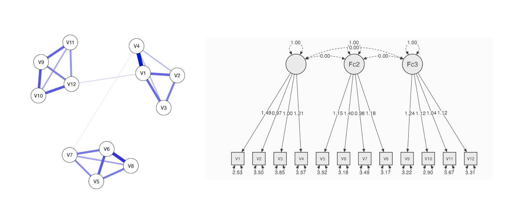
6.4.3 Fitting Ising models
With IsingFit we can easily fit cross-sectional data generated with the Ising attitude model. Figure 6.19 shows a good fit of the model. The code for this analysis is:
library("IsingSampler")
library("IsingFit")
set.seed(1)
n <- 8
W <- matrix(runif(n^2,0.5,2),n,n); # random positive matrix
W <- W * matrix(sample(0:1,n^2,prob=c(.8,.2),replace=T),n,n) # delete 90% of nodes
W <- pmax(W,t(W)) # make symmetric
diag(W) <- 0
ndata <- 1000
thresholds <- rnorm(n,0,1)
data <- IsingSampler(ndata, W, thresholds, beta = .5, responses = c(-1, 1))
fit <- IsingFit(data,family='binomial', plot=FALSE)
layout(t(1:3))
qgraph(W,fade = FALSE);title("Original network",cex.main=2)
qgraph(fit$weiadj,fade = FALSE);title("Estimated network",cex.main=2)
plot(thresholds,type='p',bty='n',xlab='node',ylab='Threshold',cex=2,cex.lab=1.5);lines(fit[[2]],lwd=2)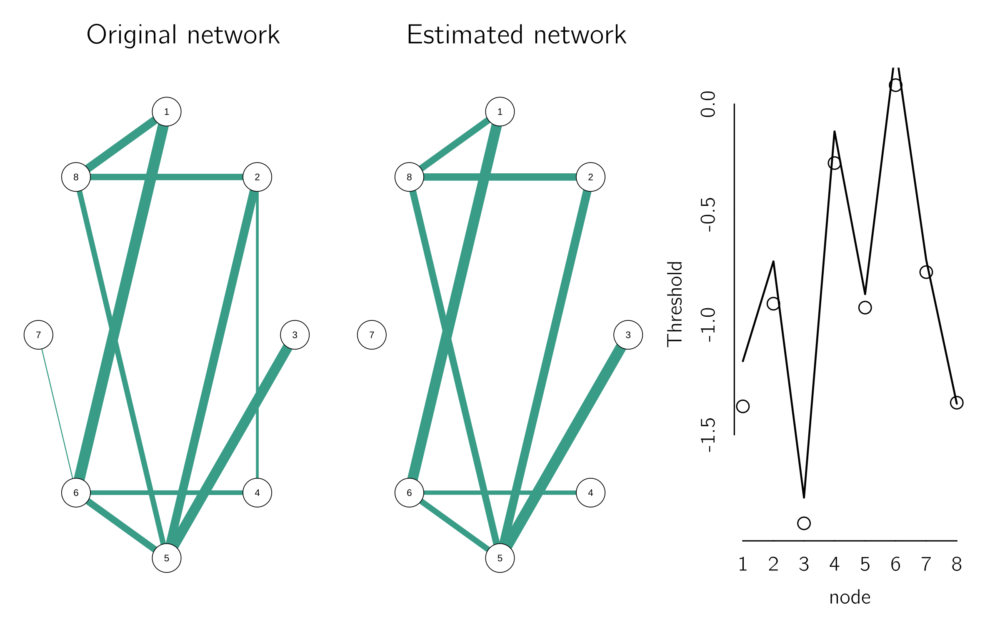
An empirical example is provided in Jonas Dalege et al. (2017) . The open-access data (\(N = 5728\)) come from the American National Election Study (ANES) of 2012 on evaluative reactions toward Barack Obama. The items and abbreviations are:
| Items tapping beliefs | Abbreviation |
|---|---|
| “Is moral” | Mor |
| “Would provide strong leadership” | Led |
| “Really cares about people like you” | Car |
| “Is knowledgeable” | Kno |
| “Is intelligent” | Int |
| “Is honest” | Hns |
| Items tapping feelings | |
| “Angry” | Ang |
| “Hopeful” | Hop |
| “Afraid of him” | Afr |
| “Proud” | Prd |
We can use Isingfit and add community detection:
Obama <- read.table("data/Obama.txt",header=T) # see book data folder
ObamaFit <- IsingFit(Obama,plot=F)
ObamaiGraph<- graph_from_adjacency_matrix(abs (ObamaFit$weiadj), 'undirected', weighted = TRUE, add.colnames = FALSE)
ObamaCom <- cluster_walktrap(ObamaiGraph)
qgraph(ObamaFit$weiadj, layout = 'spring', cut = .8, groups = communities(ObamaCom), legend = FALSE)Figure 6.20 shows the network. The red nodes represent negative feelings toward Barack Obama; the green nodes represent positive feelings toward Obama; the light blue nodes represent judgments primarily related to interpersonal warmth; and the purple nodes represent judgments related to Obama’s competence. This community structure is consistent with the postulate of the CAN model that similar evaluative responses cluster Jonas Dalege et al. (2016) . Finnemann et al. (2021) present additional examples and applications of other packages.

6.5 Challenges
Since the early work on network psychology, the mutualism model, and the paper on the network perspective on comorbidity, a tremendous amount of work has been done. In particular, network psychometrics has taken off in an unprecedented way. One could say that modern psychometrics is being reinvented from a network perspective. For every type of data and research question, a network approach seems to be available. For example, there are R packages for meta-analysis from a network perspective (Salanti et al. 2014). I also note that much work has been done to understand the relationship between network psychometrics and more traditional techniques such as item response theory (M. Marsman et al. 2018) , factor models (Waldorp and Marsman 2022) and structural equation modeling (Epskamp, Rhemtulla, and Borsboom 2017). Nevertheless, there are still many challenges for both psychological network modeling and network psychometrics.
6.5.1 Psychological network modelling
Despite all the hard work on this, I can only conclude that this theoretical line of research is still in its infancy. The strength of the application to intelligence is that it provides an alternative to the \(g\)-factor approach, which is also nothing more than a sketch of a theory. The extensions of the mutualism model (Ron et al. 2023b; Savi et al. 2019) are new steps, but still rather limited models. One reason for this state of affairs is that it is really hard to pinpoint the elementary processes involved in intelligence, and indeed in any psychological system.
This is less of a problem in the factor account because the indicators are interchangeable in a reflective factor model. Once one has a sufficiently broad set of indicators, the common cause estimate will be robust. In a formative model, each indicator contributes a specific meaning to the index variable. However, this is not a reason to prefer the common cause model (van der Maas, Kan, and Borsboom 2014).
The other modeling examples suffer from the same problem. In the clinical psychology models, we define the nodes either as the symptoms specified in the DSM or as the questions asked in interviews or questionnaires, with the advantage that we then have data to fit the model. But again, we have no real way of knowing the elementary processes in clinical disorders and their interactions. If we miss important elementary nodes, this will seriously affect the validity of our models and psychometric network analyses (Eiko I. Fried and Cramer 2017).
A way out has been mentioned in the context of the Ising Attitude Model, using the mean field approximation. If we are only interested in the global behavior of the attitude (hysteresis, divergence), we can ignore the specification of the nodes (another interchangeable argument). But if one wants to intervene on specific nodes or links of a clinically depressed person, this is not sufficient.
Another critical point is that these models increase our understanding of psychological phenomena, but seemingly not our ability to predict or intervene. For example, the Ising Attitude model helps us understand the role of attention or involvement in the dynamics of attitudes. If this factor is too high, persuasion will be extremely difficult due to hysteresis. Anyone who has ever tried to argue with a conspiracy theorist knows what I mean. But too little attention is also a problem. In the model, these are people who are sensitive to the external field, e.g., you tell them to clean their room, but as soon as you leave, the attitude falls back into random fluctuations. The message gets through but does not stick. I find this insightful, but I must admit that it does not provide us with interventions. We don’t know how to control attention or engagement, although more work can and will be done on this.
For intelligence, the model suggests that the active establishment of near and far transfer might be effective. A disappointing lesson from developmental psychology is that transfer does not always occur automatically (e.g., Sala et al. 2019). However, strategies for improving transfer do exist (Barnett and Ceci 2002) and according to the mutualism model, should have a general effect.
In Chapter 1, I mentioned the case of the shallow lake studied in ecology, where catching the fish was a very effective intervention, while addressing the cause, pollution, was ineffective due to hysteresis. Ecologists now know why this is so, and have developed models to explain this phenomenon. However, I did not mention that this intervention was not suggested by modeling work, but by owners of ponds who observed that ponds without fish sometimes spontaneously tipped to the clear state. This is not an uncommon path in science, and it may well occur in clinical psychology. The touted extraordinary successes of electroshock therapy for severe depression or new drugs (MDMA) for post-traumatic stress disorder could be our “fish”. But also these claims have been criticized (e.g., Borsboom, Cramer, and Kalis 2019/ed; Read and Moncrieff 2022).
Although much more progress can be made in network modeling of psychological systems, it is advisable to be realistic. Progress in mathematical modeling of ecosystems has also been slow. Ecosystems and human systems are devilishly complex. The formalization of psychological models is of interest for many reasons Borsboom et al. (2021), but will only be effective if we also make progress in other areas, such as measurement.
6.5.2 Psychometric network analysis
This approach is also not without its problems, some of which are related to the problems of psychological network modeling. For example, the definition of nodes and the risk of missing nodes in the data is a serious threat. Again, this is not a unique problem; simple regression analysis suffers from the same risks. Another common threat to many applications of psychometric network analysis is the reliance on self-report in interviews or questionnaires. Generalizability, which may depend more on the choice of sample and measurement method than on the statistical analysis itself, is another example of a common problem in psychology in general and psychometric network analysis, in particular.
Psychometric network analysis has been criticized because the result are difficult to replicate (Forbes et al. 2017). Replication of advanced statistical analyses, whether structural equation modelling, fMRI, or network psychometrics, is always an issue. For network analysis, a number of safeguards have been developed to increase replicability (Borsboom et al. 2017, 2018; Burger et al. 2022).
A final important issue concerns causality. Network models estimated from cross-sectional data are descriptive rather than causal, that is, they do not provide information about the direction of causal relationships between variables. Developing methods for inferring causality from network models is an important challenge in the field.
The move to time series data (either \(N=1\), \(N>1\), or panel data) partially solves this problem. With time series data, we can establish Granger causality, a weaker form of causality based on the predictive power of one time series over another in a time series analysis. However, the relationship may be spurious, influenced by other variables. Network analysis on time series often requires a lot of reliable and stationary data. An important issue is the sampling rate of the time series. In general, to accurately estimate a continuous time-varying signal, it is necessary to sample at twice the maximum frequency of the signal. This is called the Nyquist rate. Another issue is the assumption of equidistance between time points (Epskamp et al. 2018), which can be circumvented by using continuous time models (Voelkle et al. 2012).
While these problems are not unique to network psychometrics, they are common problems in practice (see Hamaker et al. 2015; Ryan, Bringmann, and Schuurman 2022). Finally, causal testing always requires direct intervention. The combination of observational and experimental data can provide sufficient information to properly estimate causal relationships in directed acyclic graphs (Dablander and van Bork 2021; Kossakowski, Waldorp, and van der Maas 2021).
But we can also think of other ways. A simple, but not easy to implement, procedure is to ask subjects about the links in their networks. If one claims not to eat meat because of its effect on the climate, one might consider adding a directed link to this individual’s network (Rosencrans, Zoellner, and Feeny 2021). Deserno et al. (2020) used clinicians’ perceptions of causal relationships in autism. These relationships were consistent with those found in self-reported client data. The main problem is that there are many more possible links than nodes to report on, which makes the questionaries extremely long and tedious to fill out. Brandt (2022) applied conceptual similarity judgments to construct attitude networks. Alternatively, one could try to estimate links from social media data, interviews or essays using automatic techniques (Peters, Zörgő, and van der Maas 2022).
6.6 Conclusion
Despite these critical remarks, it is safe to say that the psychological network approach has made great progress in a very short time. The mutualism paper was only published in 2006. It is a new and unique application of the complex systems approach within the field of psychology. For me, the common cause approach is theoretically unsatisfactory because the common causes are purely hypothetical constructs. For both the \(g\)- and the \(p\)-factor, a reasonable explanation of the origin of these factors is a mystery. In contrast, the reciprocal interactions between function and symptoms that underlie the network theories of intelligence and psychopathology are not really controversial. It is also good to note that the network approach is not inconsistent with factor analytic work in psychology. It is a matter of interpreting the general factor as a common cause or as an index. The formative interpretation of factors is consistent with the network approach.
6.7 Exercises
Reproduce the degree distribution of the Barabási-Albert model shown on the Wikipedia page on the scale-free network. Use sample_pa from the Igraph library. (*)
Open and run the ‘Preferential attachment’ model in NetLogo. Replace the line ‘report [one-of both-ends] of one-of links’ with ‘report one-of turtles’. New nodes will now connect to a random node. Does this result in a random network? (*)
Make a hysteresis plot in the ‘Vulnerability to Depression’ model in NetLogo. (*)
Download the Vulnerability to Depression model from the NetLogo User Community Models. With the ADMINISTER-SHOCK button, you can deactivate all symptoms at once. It is as if you give the network an electric shock that resets all the symptoms. Try to find a setting of the CONNECTION-STRENGTH and EXTERNAL-ACTIVATION that creates a disordered network (above the black line in the NETWORK STATUS plot) whereby administering a shock, makes the system healthy again. Is this healthy state long term stable? (*)
Compute the Gibbs entropy for the learning Ising model during the learning process. Show in a plot that learning minimizes the Gibbs entropy. (**)
Install and open JASP (jasp-stats.org). Open the data library: 6. Factor. Read all the output and add a confirmatory factor analysis. What is the standardized factor loading of Residual Pitch in the confirmatory one-factor model? (*)
Read the blog ‘How to Perform a Network Analysis in JASP’ (https://jasp-stats.org/2018/03/20/perform-network-analysis-jasp/. Reproduce the top plots of Figure 6.17. Generate the data using the R-code in the chapter, import the data into JASP and perform the network analysis. (*)
Study the R-code for the case where the M-matrix consists of three blocks. Generate the data and import into JASP. Apply exploratory factor analysis, check the fit for 1 to 3 factor and report the p-values. Fit the confirmatory 3 factor model. Does it fit? Add V1 to the second instead of the first factor. How do you see the misfit? (*)
How can you generate data for a higher order factor model using the mutualism model? What should be changed in the code of the M matrix for the case of three blocks? Show that the three-factor solution (assuming uncorrelated factors) does not fit the resulting data. Fit a higher order factor model and report the p-value of the goodness of fit. How does the network plot change? (**)
Generate data for a network in a cycle (v1 -> v2 -> v3…v12 -> v1). Fit a network and an exploratory factor model. Does this work? What does this tell us about the relationship between the class of all network models and all factor models? (**)
Fit a Bayesian network in JASP to the data generated for Figure 6.19. Warning: The GM in JASP expects (0,1) data. Check that only the simulated links have high Bayes factors. (*)